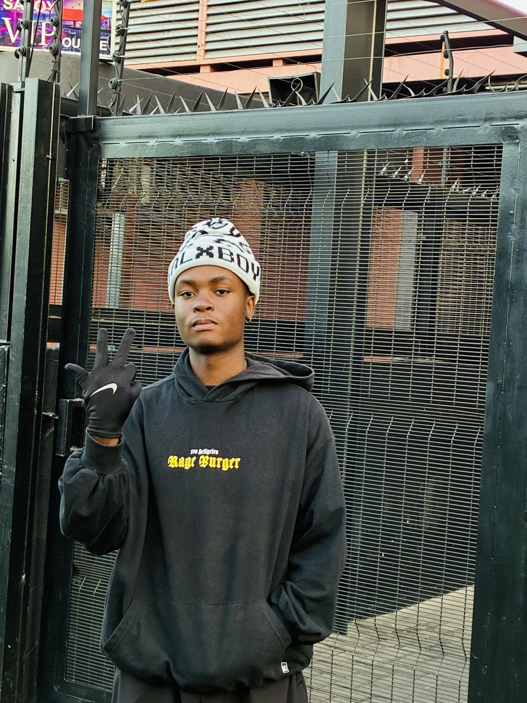
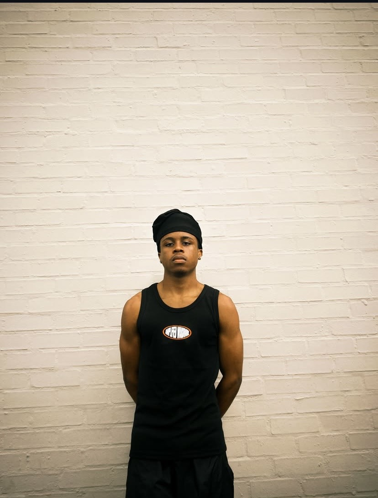
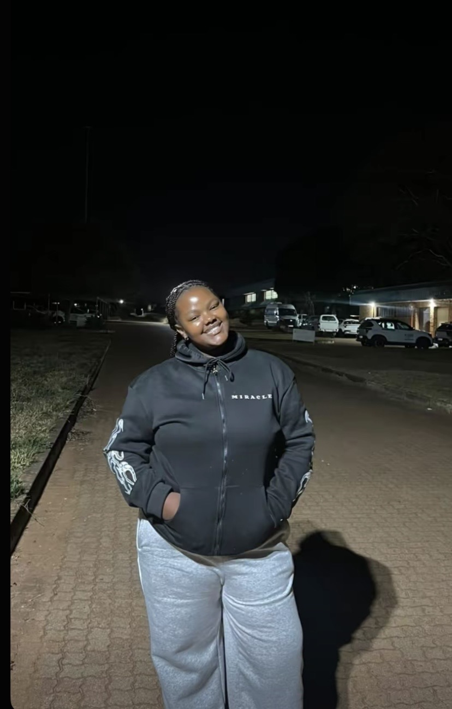

Kamogelo Ramoganyaka
Lead Photographer
10+ years in fashion and commercial photography.
"Show audience your art, it's a summary of your own story"
Founded in 2018 by Sipho Somela, EMPD Studio has become one of the top photography studios in Pretoria. What started as a home-based operation grew into the heart of art in Pretoria's district. Mr. Somela's signature style — warm and elegant — has produced photographs that carry authentic emotion. Multiple studio awards, as well as loyal clientele, were earned through Mr. Somela's artistry.
We've worked with global brands, local fashion designers, and award-winning musicians.
Our approach is simple: authentic, raw, and diverse. We believe in telling real stories that connect with people.
The creative minds behind the lens

Lead Photographer
10+ years in fashion and commercial photography.

Creative Director
Stylist and visual storyteller.

Senior Editor
Expert in colour grading and bringing images to life.